File Management using Github
This training module was developed by Alexis Payton, Lauren E. Koval, Julia E. Rager.
All input files (script, data, and figures) can be downloaded from the UNC-SRP TAME2 GitHub website.
Introduction to Training Module
Good data practices like file management and code tracking are imperative for data analysis initiatives, especially when working in research teams and/or shared project folders. Often times analyses and manuscripts are edited many times prior to being submitted for a grant or publication. Analysis methods are also shared between members of a research team and to external communities, as further detailed in TAME 2.0 Module 1.1 FAIR Data Management Practices. Therefore, Github has emerged as an effective way to manage, share, and track how code changes over time.
Github is an open source or publicly accessible platform designed to facilitate version control and issue tracking of code. It is used by us and many of our colleagues to not only document versions of script written for data analysis and visualization, but to also make our code publicly available for open communication and dissemination of results.
This training module serves a launch pad for getting acclimated with Github and includes…
- Creating an account
- Uploading code
- Creating a repository and making it legible for manuscript submission
Creating an Account
First, users must create their own accounts within github to start uploading/sharing code. To do this, navigate to github.com, click “Sign Up”, and follow the on screen instructions.
Creating a Repository
A repository, also known as a “repo”, is similar to a project folder that will contain all code pertaining to a specific project (which can be used for specific research programs, grants, or manuscripts, as examples). A repository can be set to public or private. If a repo is initially set to private to keep findings confidential prior to publication, it can always be updated to public once findings are ready for public dissemination. Multiple people can be allowed to work on a project together within a single repository.
To access the repositories that are currently available to you through your user account, click the circle in top right-hand corner and click “Your repositories”.
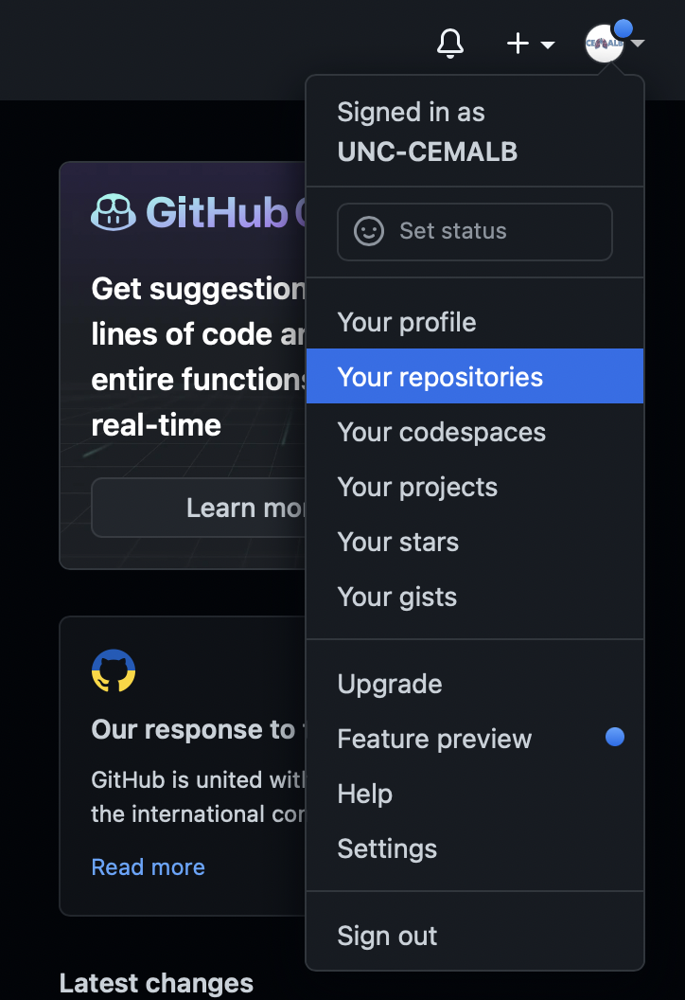
To create a new repository, click on the green button that says “New”.
Then give your repository a descriptive name. We often edit the repo titles to match the title of specific manuscripts, though specific titling formats are up to the users/team’s preference.
For more information, visit Github’s Create a repo documentation.
Then click “Add a README file” to initiate the README file, which is important to continually edit to provide analysis-specific background information, and any additional information that would be helpful during and after code is drafted to better facilitate tracking information and project details. We provide further details surrounding specific information that can be included within the README file below. 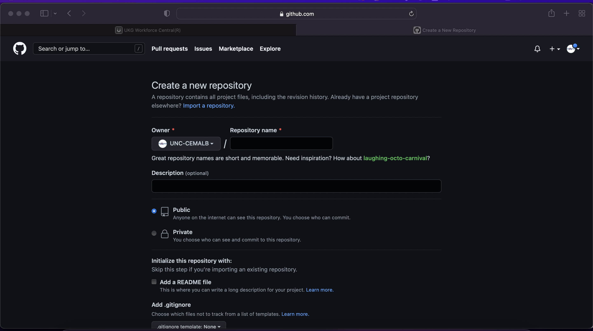
Uploading Code
The simplest way to upload code is to first navigate to the repository that you would like to upload your code/associated files to. Note that this could represent a repo that you created or that someone granted you access to.
Click “Add file” then click “Upload files”. Drag and drop your file containing your script into github and click “Commit changes”. 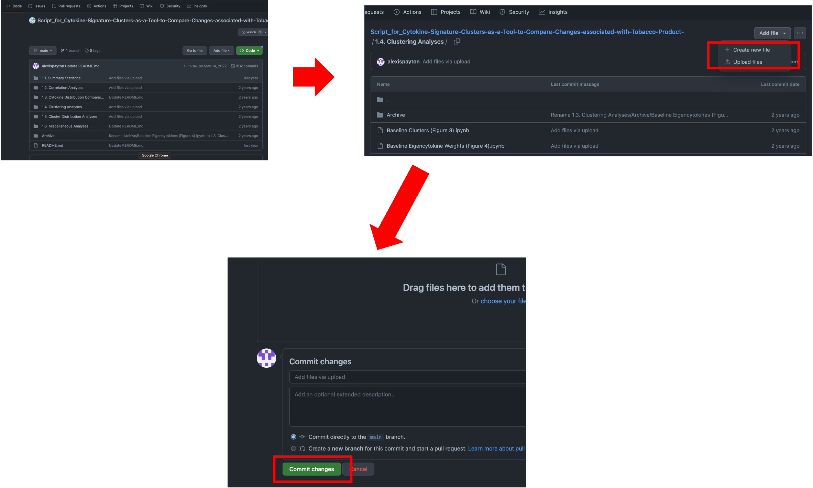
A more advanced way to upload code is by using the command line, which allows a user to directly interact with the computer or software application. Further documentation can be found here.
Adding Subfolders in a Repository
To keep the repository organized, it might be necessary to create a new folder (like the folder labeled “1.1. Summary Statistics” in the above screenshot). Files can be grouped into these folders based on the type of analysis.
To do so, click on the new file and then click on the pencil icon next to the “Blame” button. 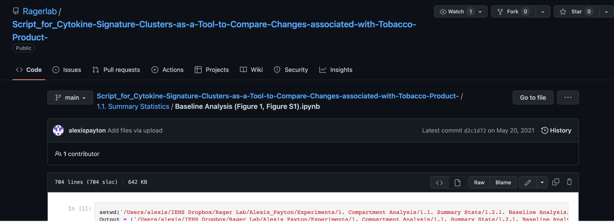
Click on the box that contains the title of the file. Write the title of your new folder and then end with a forward slash (/). In the screenshot below, we’re creating a new folder entitled “New Folder”. Click “Commit changes” and your file should now be in a new folder. 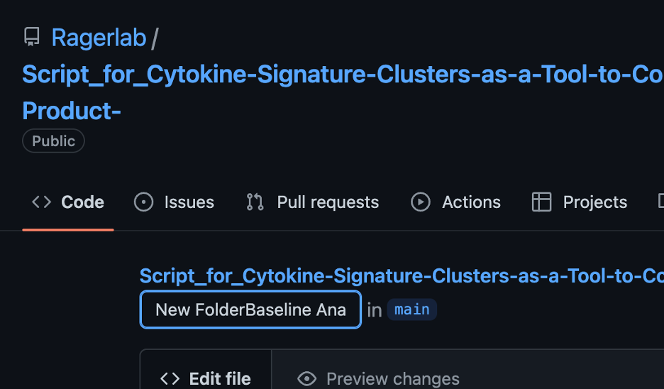
Updating Code
Saving iterations of code can save valuable time later as analyses are constantly being updated and edited. If your code undergoes substantial changes, (e.g., adding/ removing steps or if there’s code that is likely to be beneficial later on, but is no longer relevant to the current analysis), it is helpful to save that version in Github for future reference.
To do so, create a subfolder named “Archive” and move the old file into it. If you have multiple versions of a file with the same name, add the current date to prevent the file from being overwritten later on as seen in the screenshot below. 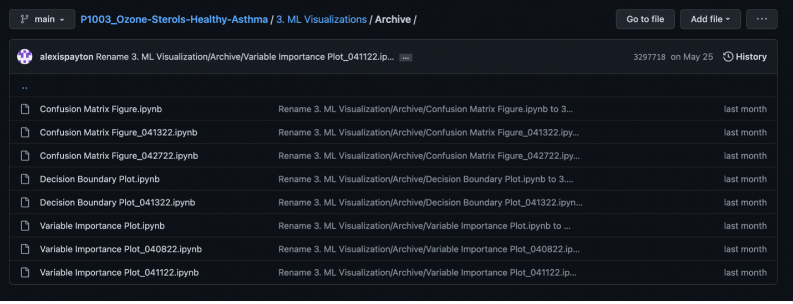
Once the old file version has been archived, now upload the most recent version of your code to the main folder. Based on the screenshot above, that would be under “3. ML Visualizations”.
Note: If a file is uploaded with the same name it will be overwritten, which can’t be undone! Therefore, put the older file into the archive folder if you’d like it to be saved PRIOR to uploading the new version.
Updating Repository Titles and Structure to Support a Manuscript
If the code is for a manuscript, it’s helpful to include the table or figure name it pertains to in the manuscript in parentheses. For example, “Baseline Clusters (Figure 3)”. This allows viewers to find find the code for each table or figure faster. 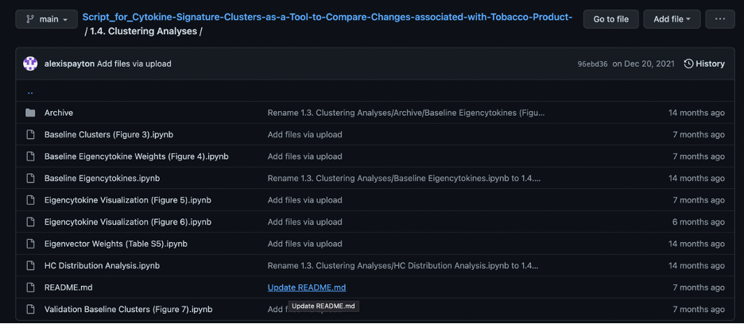
Using a README.md file
A README.md file is used to describe the overall aims and purpose of the analyses in the repository or a folder within a repository. It is often the first file that someone will look at in a repo/folder, so it is important to include information that would be valuable to an outsider trying to make use of the work.
To add a README.md file, click “Add file” and then “Create new file”.
Name your file “README.md”. 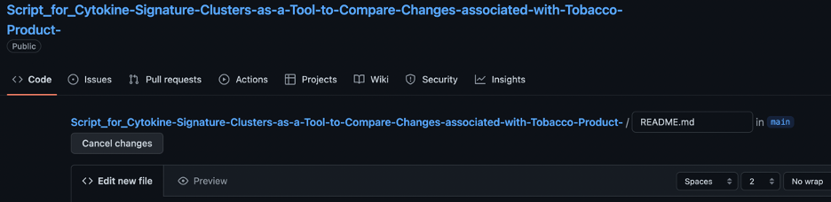
A README.md file uses R markdown syntax. This type of syntax is very helpful as you continue to develop R coding skills, as it provides a mechanism through which your code’s output can be visualized and saved as a rendered file version. There are many helpful resources for R markdown, including some that we find helpful:
The final README.md file for the OVERALL repository for manuscript submission should look something like the screenshot below. Always include…
- The main goal of the project
- The final manuscript name, year it was published, Pub Med ID (if applicable)
- Graphical abstract (if needed for publication)
- Names and brief descriptions of each file
- Include both the goal of the analysis and the methodology used (ie. Using chi square tests to determine if there are statistically significant differences across demographic groups)
- If the code was written in the software Jupyter (ie. has the extension .ipynb not .R or .Rmd), NBViewer is a website that can render jupyter notebooks (files). This is helpful, because sometimes the files take too long to render, so link the repository from the NB viewer website.
- Go to nbviewer.org –> type in the name of the repository –> copy the url and add it to the README.md file 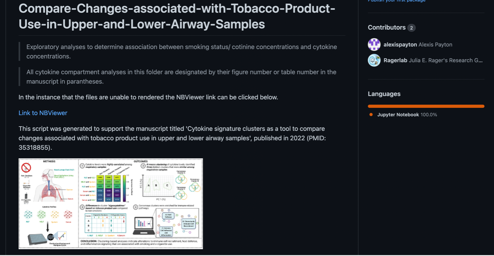
The final README.md file for the a subfolder within a repository should look something like the screenshot below. Always include…
- The name of each file
- Brief description of each file
- Include both the goal of the analysis and the methodology used
- Table or Figure name in the corresponding manuscript (if applicable) 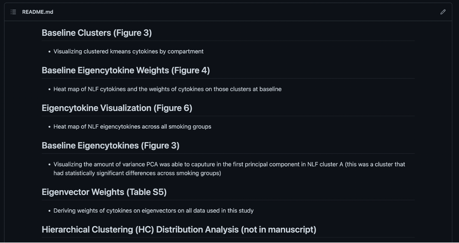
Note: That the organization structure for the README.md files are simply recommendations and should be changed based on needs of the project. However, it is important to include information and organize the repository in a way that helps other readers and colleagues navigate it who aren’t familiar with the project.
Tracking Code Changes using Github Branches
Github is a useful platform for managing and facilitating code tracking performed by different collaborators through branches.
When creating a repository on Github, it automatically creates a default branch entitled “main”. It’s possible to create a new branch which allows a programmer to make changes to files in a repository in isolation from the main branch. This is beneficial, because the same file can be compared across branches, potentially created by different scientists, and merged together to reflect those changes. Note: In order for this to work the file in main branch has to have the same name and the file in the newly created branch.
Let’s start by creating a new branch. First, navigate to a repository, select “main” and then “View all branches”. 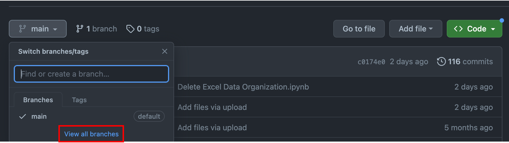
Click “New branch”, give your branch a title, and click “Create new branch”. In the screenshot, you’ll see the new branch entitled “jr-changes”.
As a new collaborator interested in comparing and merging code changes to a file, click on the new branch that was just created. Based on the screenshot, that means click “jr-changes”. 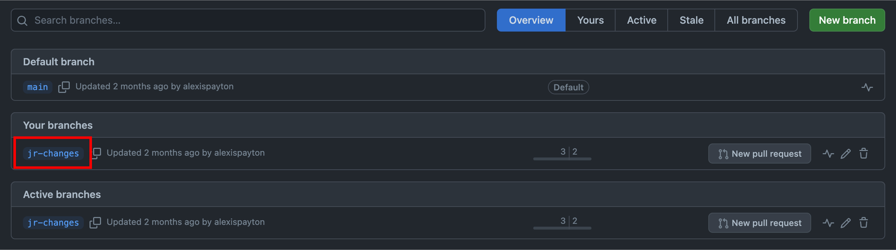
After uploading the file(s) to this branch, you’ll see a notification that this branch is now a certain number of commits ahead of the main branch. A commit records the number of changes to files in a branch. Based on the screenshot, “jr-changes” is now 2 commits ahead of “main”. 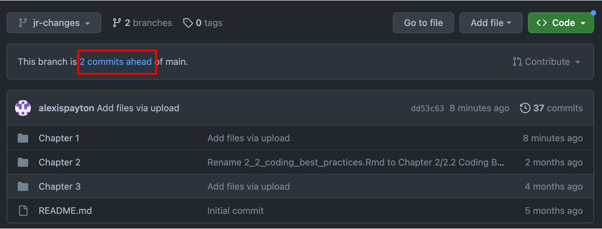
Click on “2 commits ahead” and scroll down to compare versions between the “main” and “jr-changes” branches. A pull request will need to be created. A pull request allows other collaborators to see changes made to a file within a branch. These proposed changes can be discussed and amended before merging them into the main branch. For more information, visit Github’s branches, pull requests and comparing branches in pull requests documentation. 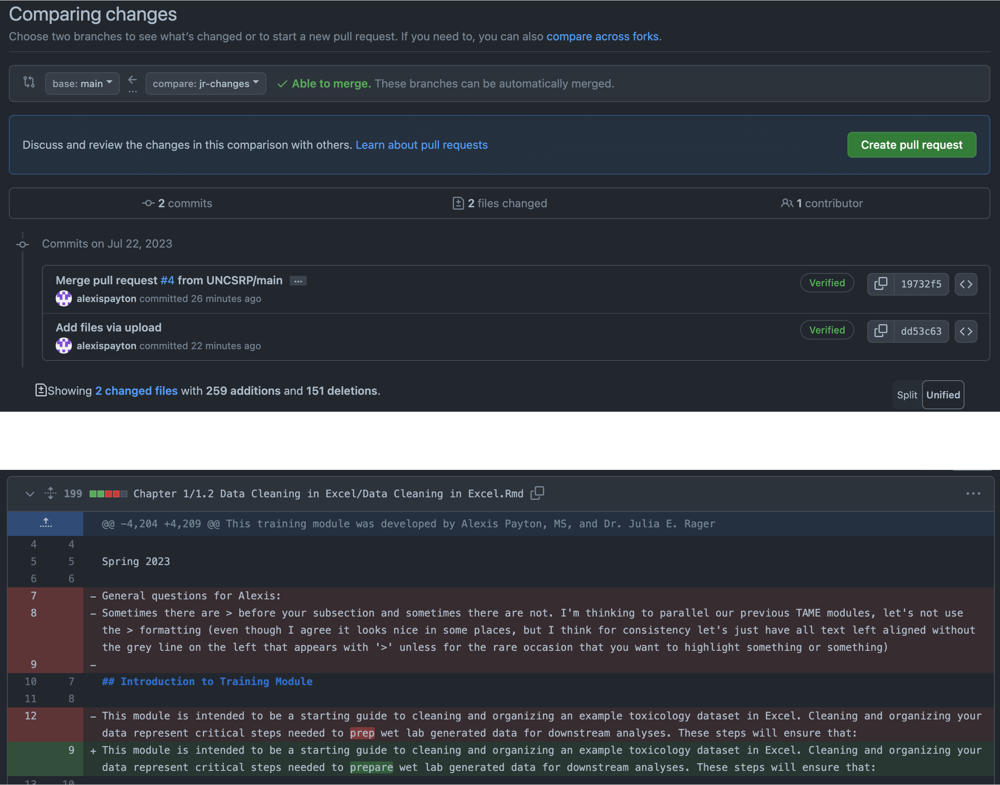
Go ahead and click on “Create pull request”. Click on “Create pull request” again on the next screen. Select “Merge pull request” and then “Confirm merge”. 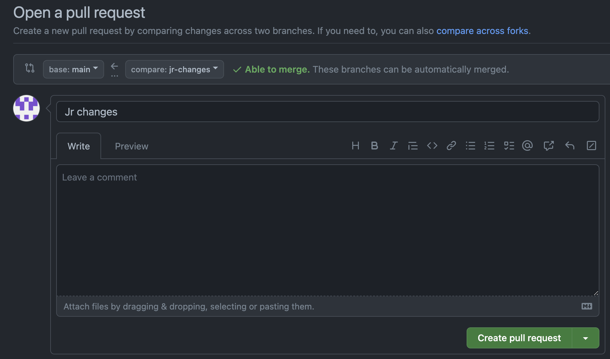
Concluding Remarks
In summary, this training module serves as a basic tutorial for sharing code on Github in a way that is beneficial for scientific research. Concepts discussed include uploading and updating code, making a repository easily readable for manuscript submissions, and tracking code changes across collaborators. We encourage trainees and data scientists to implement code tracking and sharing through Github and to also keep up with current trends in data analysis documentation that continue to evolve over time.
Try creating your own Github profile, set up a practice repo with subfolders, and a detailed READ.md file paralleling the suggested formatting and content detailed above for your own data analyses!